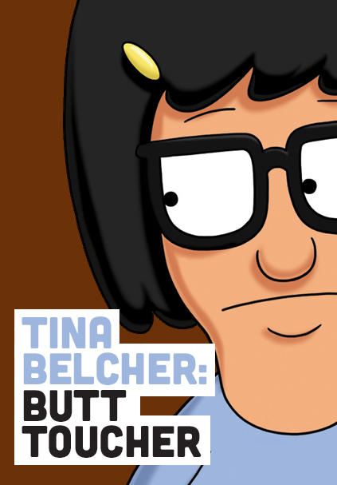

"I'm a smart, strong, sensual woman."
 Tina Ruth Belcher is the oldest child. She is a hopeless romantic with a powerful sex drive and minimal social skills. She likes horses, rainbows, zombies, writing erotic fiction, and movies, as was revealed in Crawl Space. She attends Wagstaff School with her siblings, Gene Belcher and Louise Belcher. She is voiced by Dan Mintz.
Tina's personality in essence is a quirky girl transitioning from childhood to adolescence. The child in her still clings to her love for horses, rainbows, and zombies while her inner teenager calls her to fantasize about zombies making out, writing her feelings/activities in her diary, to write erotic fiction whether it be about friends or other people's works, and constantly think about her crush, Jimmy Pesto, Jr., along with anyone else she deems cute like an entire baseball team of twenty-five for example.
Like-wise Tina has little to no social skills. When voting who would serve a customer they thought was a child molester, Bob says they shouldn't let Tina serve him because she is bad with customers. Louise says that it isn't her fault because she's autistic, but they are immediately contradicted by their father. Whether she is autistic or not she still displays poor social skills whether it be her prolonged groaning when under pressure, hiding under tables, being a naïve, or taking things very literally.
Also, Tina doesn't show emotions or emote well. Even when times are rough and she's under tremendous amounts of pressure, her voice is always inflectionless, even her groans are disinterested. The only exception is when she crashes a car, lies to an insurance company (which she feels incredibly guilty about), and burns down a man's house is when her tone actually shows a little emotion from all the pressure she had endured thus far. After that she begins to emote better, a little more frequently.
Despite most teenage girls wanting to be like each other and their self-worth dwindling because of it, she has quite a bit of confidence and self-worth. Initially, she conforms to the peer-pressure of shaving her legs, but regrets it when reflecting on how she did it for the wrong reasons. Then when discussing with her Dad on self-confidence she says that she believed that she was beautiful and became so and he should too. And to further attest to her self confidence, she considers herself to be a smart, strong, sensual woman.
Tina, like the rest of the Belcher family, has slightly tan skin and black hair. She wears her hair in a bob style with uneven bangs across the front and a yellow hairclip. Like her mother, Tina's eyesight is impaired and she wears glasses to correct the problem.
Tina's usual attire consists of a light blue t-shirt, a navy blue skirt, white tube socks with a red stripe, and black high top sneakers that resemble Chuck Taylor All-Stars. In more formal situations, Tina has a purple dress and black shoes. She sleeps in a light purple top with grey bottoms and occasionally slippers.
Jimmy Pesto Jr.
In every episode with Jimmy Jr. it's shown that Tina likes him, and according
to Tina she has logged over 3000 fantasy hours with him and "You don't just
throw that away!"
Nathan
In Beefsquatch, Tina meets Nathan at a recording of Get On Up with Chuck and
Pam. He has a weird crush on Pam and uses her to try and get close to Pam.
Josh
In Two for Tina, Tina decides to go to the dance with Josh, the boy she met
lurking in the dairy case at Fresh Feed in Lindapendent Woman.
Jonas
In Uncle Teddy, Tina falls for the new delivery boy at Reggie's Deli who
plays the melodica.
Jeff
Jeff was an easy breezy shoe box with the name "Jeff" on him that appeared in
Tina and the Real Ghost. Tina thought Jeff was a ghost who lived inside the
box, but it turned out that Louise tricked her in to thinking he was a 13 year
old boy. Took Jeff to many places such as Wonder Wharf and a Butterfly Exibit.